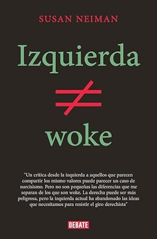

Izquierda no es woke
Reseña por Jorge I. Zuluaga

Ver reseña en GoodReads (necesita cuenta)
Si se identifican, como yo, como personas de izquierda, es decir, personas que comparten los ideales de universalismo y progreso, encontraran la lectura muy ilustrativa.
Lo que yo no encontré, y que promete el título de la portada, fue una verdadera crítica a la ideología "woke", con la que además me identifico plenamente.
Tampoco leí muy claramente como lo woke se contrapone con los valores de la izquierda, o al menos no lo woke en el sentido en el que, quiénes compartimos esta visión más amplia de la sociedad, lo entendemos.
Después de leer "Izquierda no es woke", creo que la profesora Neiman ha realizado una identificación muy restrictiva de los que es la cultura woke, en particular, al asociarla casi exclusivamente con los movimientos antiracistas de los Estados Unidos o los anticolonialistas del sur global. Me atrevería a decir que de allí viene su idea de que lo woke, que ella identifica con el tribalismo, no es lo mismo que la izquierda que propugna por una visión universalista de la sociedad.
Si bien es cierto, como señala la autora, que algunas de las luchas de los movimientos woke parecen privilegiar lo local o lo que compete a un grupo "reducido" de personas (personas racializadas, personas transgénero, minorías étnicas, entro otras) frente lo universal o lo que compete a todos los humanos y sus sociedades, y que está como lo argumenta ampliamente la doctora Neiman, en el corazón de las ideologías de izquierda, también debería reconocer que la ideología woke es mucho más que eso.
Lo woke, como su nombre lo indica, implica una actitud de descubrimiento de todas las experiencias humanas y de la convicción de todas deben ser incluidas en los relatos del mundo que mantienen en funcionamiento la sociedad. Solo la inclusión de esas experiencias puede ser una guía adecuada para orientar el progreso por el que propende la izquierda.
Yo no veo nada tribalista en esto. Al contrario, me parece que lo woke es más universalista, pero un universalismo que reconoce, a diferencia de lo que hizo la ilustración y el colonialismo europeo del siglo xix, que las experiencias humanas no pueden asumirse homogéneas o determinadas biológicamente con la excusa de que todos pertenecemos a la misma especie.
Es justamente la inclusión de muchas más experiencias del mundo, por ejemplo el reconocimiento, de la valía que tiene la vida del 50% de la humanidad, las mujeres, lo que ha hecho que "woke" se convierta en un insulto para una minoría que busca que las cosas se queden socialmente como están.
Para resumir, vale la pena leer "Izquierda no es woke", pero no cumple con lo que promete y mi hipótesis es que no lo hace porque justamente, la izquierda si es woke.